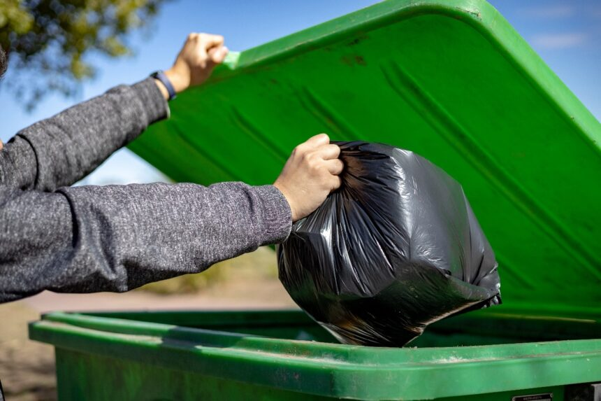
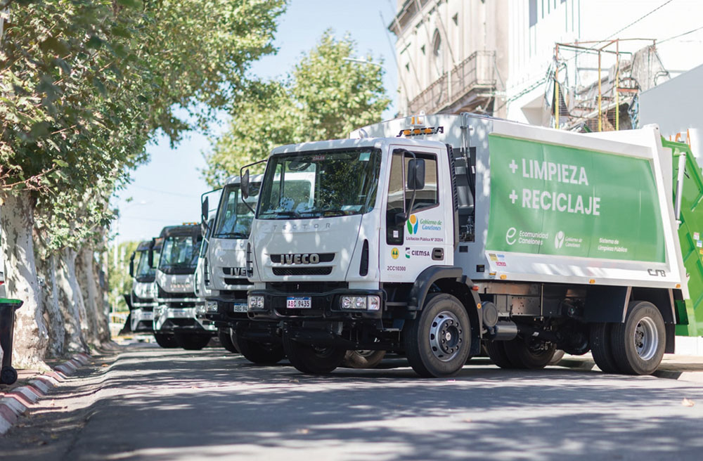
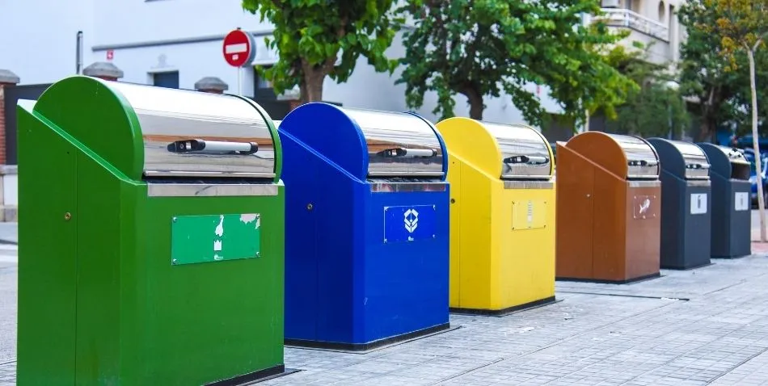
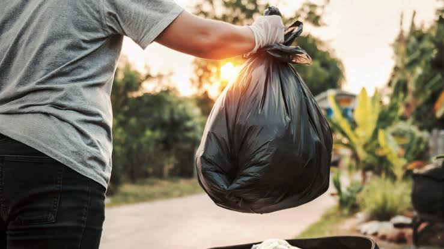
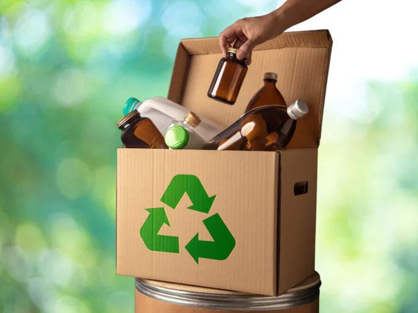
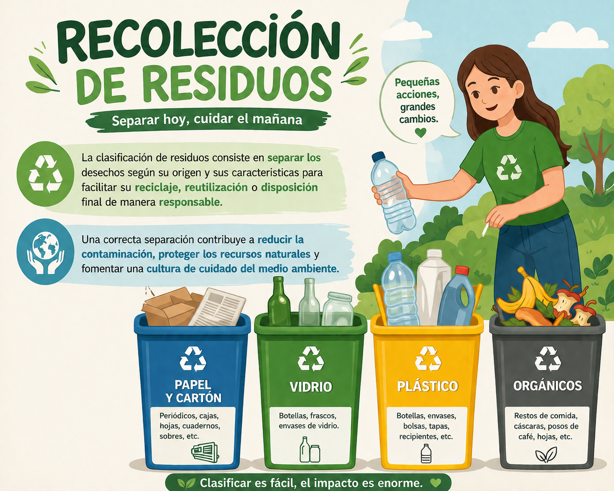

Bienvenido al Sistema de Gestión de Residuos
Este sistema permite registrar reclamos, realizar seguimiento y mejorar la gestión ambiental de la ciudad.

¿Quiénes somos?
Somos un sistema dedicado a mejorar la gestión de residuos y fortalecer la comunicación entre los ciudadanos y el municipio. Nuestro objetivo es brindar una plataforma sencilla, rápida y transparente para realizar reclamos, consultar información y promover buenas prácticas ambientales.
A través de SiGeRU buscamos contribuir a una ciudad más limpia, fomentando la participación ciudadana y facilitando el acceso a los servicios relacionados con la recolección y disposición de residuos.
Beneficios
Con SiGeRU tendrás acceso a herramientas que facilitan la gestión de residuos.
Reclamos rápidos
Registrá reclamos de forma sencilla y recibí un número de seguimiento para consultar su estado.
Información actualizada
Consultá los días de recolección, ubicación de contenedores y avisos importantes del servicio.
Cuidado del ambiente
Accedé a recomendaciones sobre clasificación de residuos y colaborá con una ciudad más limpia y sostenible.
¿Qué es la clasificación de residuos?

La clasificación de residuos consiste en separar los desechos según su origen para facilitar su reciclaje y disposición responsable.
Noticias destacadas
Información actualizada sobre el servicio y la ciudad
Campañas de limpieza
Jornadas de limpieza en distintos barrios para mejorar el entorno urbano.
Cambios en recolección
Nuevos horarios de recolección en zonas céntricas y residenciales.
Eventos ambientales
Actividades educativas sobre reciclaje abiertas a toda la comunidad.